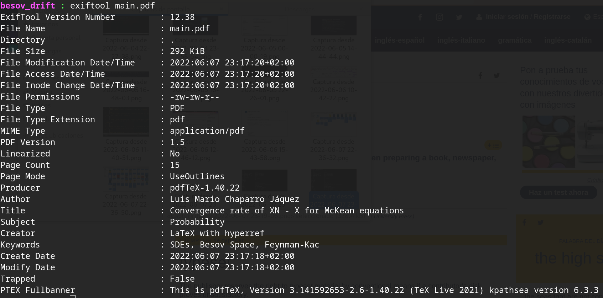

Please Put Metadata in Your LaTeX Files
Today I wanted to homogenize the naming on my totally legally downloaded (üòâ) collection of maths books, just to (unsurprisingly) see just how messed up the metadata of files you get online is.
And well, I will fix that for my files but it takes some time, and I will gift you the method I came up with to do so, once I finish. But for now, and since I was of course also guilty of not adding metadata to my documents before today, this is just a reminder of how to add metadata to documents typesetted with LaTeX.
Make sure you are using the package hyperref (which you should because your documents also have bookmarks and links between sections and things. Don’t they? üòë) and in your preamble just add this:
\hypersetup{pdftitle={Title of your file},
pdfsubject={The subject of your file},
pdfauthor={The authors of your file},
pdfkeywords={The keywords of your file}
}
And that is it!
Just as reference, if I add the following to my file
\hypersetup{pdftitle={Convergence rate of $X^N - X$ for McKean equations},
pdfsubject={Probability},
pdfauthor={Luis Mario Chaparro Jáquez},
pdfkeywords={SDEs, Besov Space, Feynman-Kac}
}
and then I trow an exiftool at main.pdf will have the following metadata:

There are many other ways to add useful and non intrusive metadata to files, but I guess if you use LaTeX this is the easiest way.